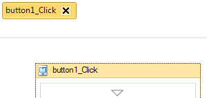

Action : Fonction
Cette action définit une fonction dans votre projet. Contrairement aux autres actions, elle n'est pas déplaçable et induplicable. Une fonction permet d'exécuter un ensemble d'actions. Cette fonction peut être appelé à tout moment dans votre projet pour l'exécuter, elle et les actions qu'elle contient.
On distingue deux types de fonctions :
Paramètres
| Paramètres | Descriptions |
|---|---|
| Nom de la fonction | Définit le nom de la fonction. |
| Type | Permet de choisir le type de la fonction (voir ci-dessus pour la différence entre les deux types) :
|
| Paramètres de la fonction (facultatif) | Depuis SoftwareZator 2012, il est possible de donner des paramètres à une fonction. Si vous donnez par exemple 3 paramètres à une fonction, lorsque vous appellerez cette fameuse fonction, vous devrez préciser les valeurs de ces 3 paramètres. Le but étant de pouvoir utiliser ces valeurs dans les actions qui s'exécutent dans la fonction. Vous pourrez donc utiliser ces paramètres comme des variables. Mais uniquement à l'interrieur de la fonction possédant ces paramètres. |
Erreur à ne pas commettre : Faites très attention au nom de la fonction. Celui-ci ne doit en aucun cas être le même que le nom d'un contrôle, d'une ressource, d'un paramètre, d'une étiquette, d'une propriété, d'une variable ou d'une autre fonction du même ensemble de fonctions. Dans le cas contraire, l'ordinateur confondra, par exemple, la "fonction" XYZ avec la "variable" XYZ.
Erreur à ne pas commettre : Faites très attention aux noms des paramètres. Ceux-ci ne doivent en aucun cas être le même que le nom d'un contrôle, d'une ressource, d'un paramètre, d'une étiquette ou d'une variable. Il est également impossible de définir des paramètres avec des noms identiques. Dans le cas contraire, l'ordinateur confondra, par exemple, le "paramètre" XYZ avec la "variable" XYZ.
Valeur retournée
Si votre fonction et de type "Fonction pouvant retourner une valeur", une valeur sera alors retourné. Cette valeur peut être du type de votre choix. Vous n'avez pas besoin de préciser un type de valeur en particulier.
Conseil : Vous avez la possibilité de ne pas précisé de valeur à retourner, mais celà n'est pas conseillé. Même si votre fonction ne retourne pas de valeur en particulier, il est conseillé de préciser une valeur (même nul).
Erreur à ne pas commettre : Si vous avez utilisé une action Retourner une valeur d'une fonction et que votre fonction est de type "Fonction pouvant être liées à un déclencheur", vous obtiendrez une erreur de génération, car ce type de fonction n'est pas faite pour retourner une valeur.
Remarque : L'action Retourner une valeur d'une fonction est arbitraire. En outre, si vous l'utilisez, seul la première action rencontré sera appliqué. Les autres actions Retourner une valeur d'une fonction seront ignorées. C'est pourquoi il est recommandé d'utiliser l'action Si ... Alors ... Sinon dans le cas où votre fonction est suceptible de retourner différentes valeurs.
Code Visual Basic.Net généré par SoftwareZator
Code généré pour une fonction "Votre_Fonction" de type "Fonction pouvant être liées à un déclencheur" possedant trois paramètres et lié à l'évènement "Click" d'un contrôle "Button1" :
'Fonction Votre_Fonction Public Sub Votre_Fonction(ByVal Parametre1 As Object, ByVal Parametre2 As Object, ByVal Parametre3 As Object) Handles Button1.Click End Sub
Code généré pour une fonction "Votre_Fonction" de type "Fonction pouvant retourner une valeur" possedant trois paramètres :
'Fonction Votre_Fonction Public Function Votre_Fonction(ByVal Parametre1 As Object, ByVal Parametre2 As Object, ByVal Parametre3 As Object) As Object End Function
Erreurs d'exécutions
Aucune erreur d'exécution n'est détecté ici.
Caractéristiques
| Caractères | Informations |
|---|---|
| Niveau requis | Débutant |
| Catégorie | {Aucune} |
| Type de valeur retourné | Tout type, ou aucun |
| Fonctionne dans les fonctions | Non |
| Fonctionne dans la zone de déclaration | Non |
| Peut recevoir des actions enfants | Oui |